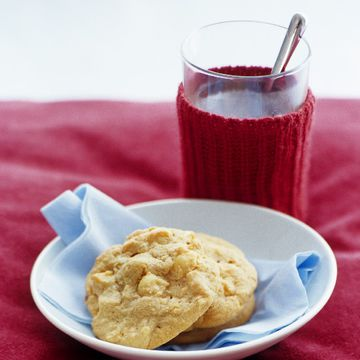

The Best Cookies

Recipe By The Cookie Cutters
Related Recipes
- Amazing Macodamian Nut Cookies !
- Beer & Pretzel Nut Cookies
- Bisquick Nut Cookies
- Browned Butter and Coconut Cookies
- Buttery Macodamian Nut Cookies
- Cherry Macodamian Nut Cookies
PREP TIME
45 Minutes
TOTAL TIME
45 Minutes
SERVINGS
A LOT and Then Some
INGREDIENTS
1 1/2 cup (3 sticks) butter, softened
1 cup brown sugar
1 cup gradulated sugar
1 Tbl vanilla instant pudding powder
2 Tbl milk
2 Tbl vanilla extract
2 Eggs
4 cups all purpose flour
2 tsp baking soda
1/2 tsp salt
4 cups macodamian nuts
1 cup chopped walnuts or pecans (optional)
How to Make Mama's Recipe: The Best Macodamian Nut Cookies.
Preheat oven to 350 degrees.
Beat butter and sugars together until light and fluffy.
Stir in pudding mix milk and vanilla extract.
Beat in Eggs.
Add dry ingredients and stir unitl combined.
Stir in macodamian nuts.
Place 1 1/2 inch balls of dough 2 inches apart on an ungreaded cookie sheet.
Bale 8 - 10 minutes or until golden brown.
EXPERT TIPS
Use an ice - cream scoop to make perfectly shaped cookies. Level off the dough on the edge of the bowl for perfectly round cookies. If you didn't think these cookies could get any better, think again! Get creative use with 1/2 cup each of semisweet macodamian nuts, sugar, or other nuts instead of JUST 2 cups semissweet chocolate chips. OMG these are sooooooo good!
Got questions? Our Experts have the answers. Email Me
NUTRITION INFORMATION
Probably bad for you, but who cares. MMMMMMM COOKIESSSS!!!!!! nom nom nom !
This recipe was altered from Open Source Recipe for more recipes go here